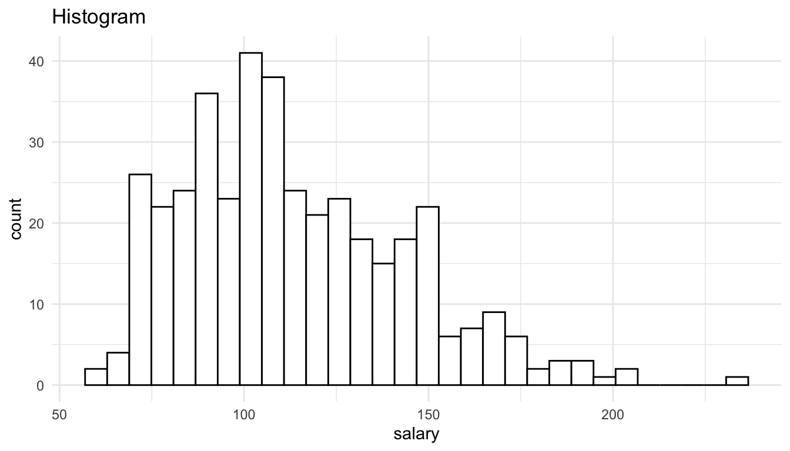
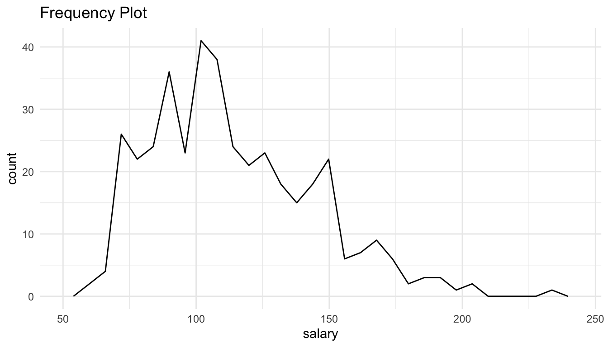
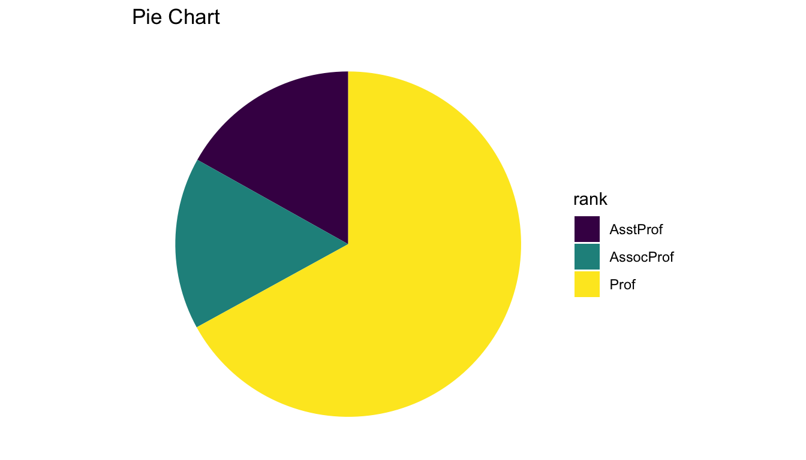
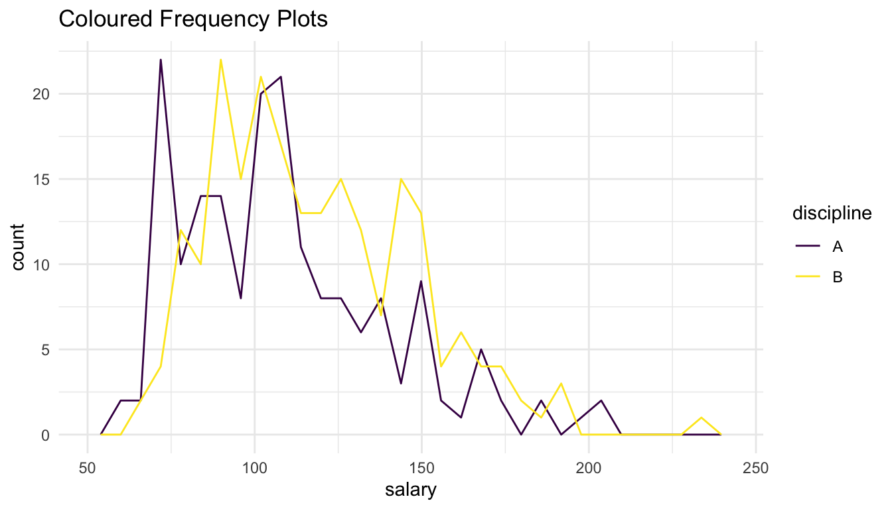
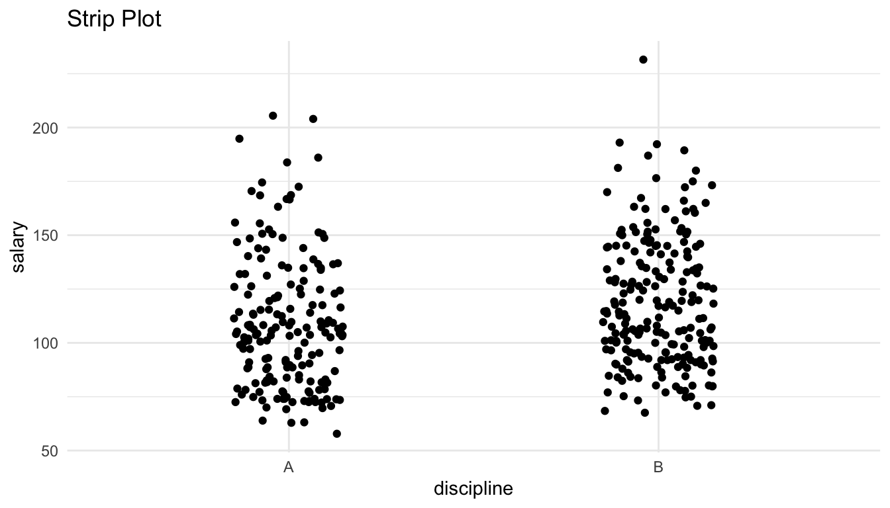
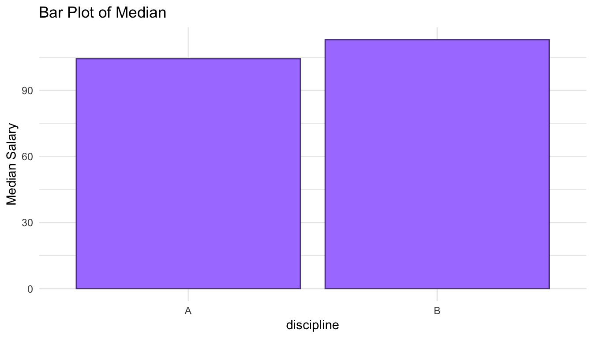
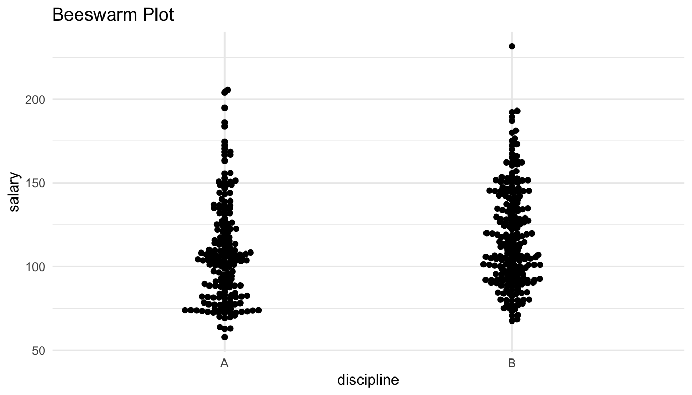
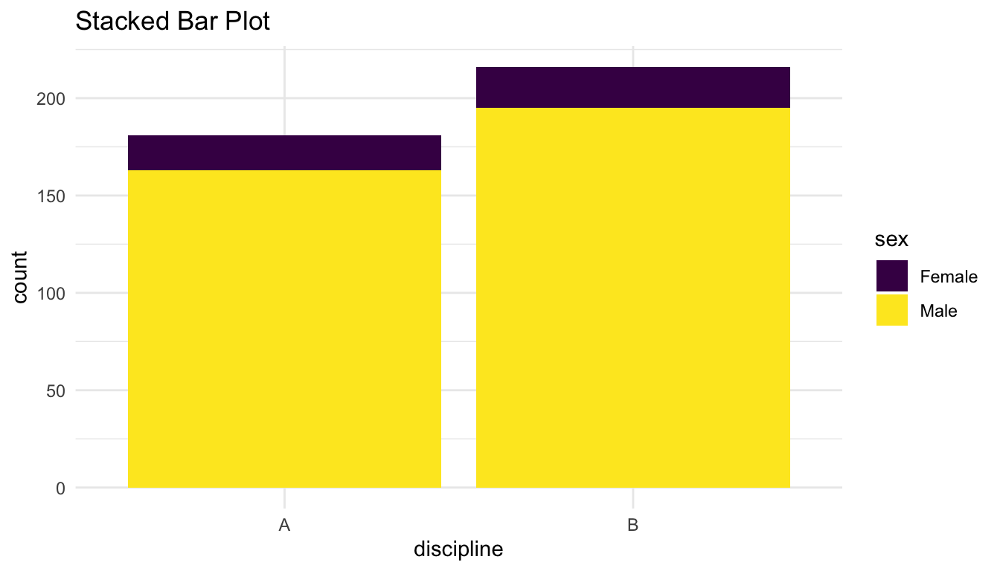
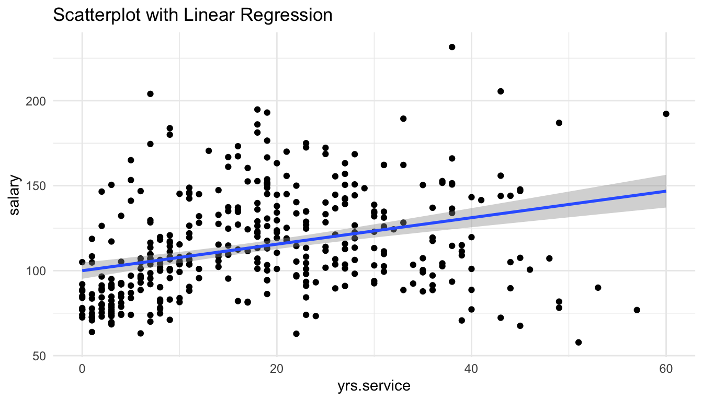
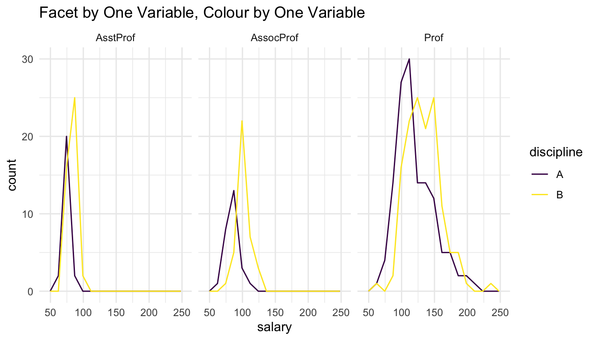

library(tidyverse)
library(carData)
Salaries <- Salaries |> as_tibble() |>
mutate(salary = salary / 1000)
theme_set(theme_minimal())
Salaries
#> # A tibble: 397 × 6
#> rank discipline yrs.since.phd yrs.service sex salary
#> <fct> <fct> <int> <int> <fct> <dbl>
#> 1 Prof B 19 18 Male 140.
#> 2 Prof B 20 16 Male 173.
#> 3 AsstProf B 4 3 Male 79.8
#> 4 Prof B 45 39 Male 115
#> 5 Prof B 40 41 Male 142.
#> 6 AssocProf B 6 6 Male 97
#> # ℹ 391 more rows1 Choosing a Visualization
In this section, we will review commonly used graphics, introduce a few new graphics, and articulate some of the benefits and drawbacks of the various graphics given below. Note that some graphs (looking at your, pie chart) mainly have drawbacks, with very few benfits. We will complete most of this with a pen-and-paper handout, but the code for many of the visualizations we will discuss is given here for reference.
1.1 Why Visualize Data?
Data visualization is important in many aspects of statistics and data science. Often, people can see patterns in data and understand the underlying data better with a visualization instead of numerical summary statistics.
But, isn’t it obvious how to create a “good” data visualization? Why should there be an entire course on the subject? Part of the answer is that there is some code that we need to learn to create flexible data visualizations. However, even if that were not the case, people are not necessarily good at constructing informative data visuals.
Examine the data is ugly subreddit for a couple of minutes to see why this data visualization is not necessarily simply a natural talent for people.
Throughout the rest of this section, we will use the Salaries data set from the carData package, which contains variables on the salaries of professors at a particular institution (not this institution though!), including the professor’s rank (AsstProf, AssocProf, or Prof), discipline (A for theoretical and B for applied), yrs.service, the years of service, sex (treated as binary in this data set: Male or Female), and salary (in dollars).
We will use an accompanying handout to discuss benefits and drawbacks of different graphs for various settings. The code for each graph in the handout is below, but, at this point in the course, we are focusing less on the code and more on what makes different graphics “good” or “bad.”
1.2 Graphs of One Variable
1.2.1 Quantitative
The following are commonly used graphs for a single quantitative variable. In the handout, we will talk about whether we can clearly see the distribution center, distribution spread, distribution shape, and the sample size from each graph, as well as any relevant graphic parameters.
ggplot(data = Salaries, aes(x = salary)) +
geom_histogram(colour = "black", fill = "white") +
labs(title = "Histogram")
ggplot(data = Salaries, aes(x = salary)) +
geom_freqpoly() +
labs(title = "Frequency Plot")
ggplot(data = Salaries, aes(y = salary)) +
geom_boxplot() +
theme(axis.text.x = element_blank(),
axis.ticks.x = element_blank()) +
labs(title = "Boxplot")
ggplot(data = Salaries, aes(x = salary)) +
geom_density() +
labs(title = "Density Plot")1.2.2 Categorical
The following are commonly used graphs for a single categorical variable. In the accompanying handout, we will discuss whether we can clearly see the overall distribution and the sample size from each graph.
ggplot(data = Salaries, aes(x = rank)) +
geom_bar(colour = "mediumpurple4", fill = "mediumpurple1") +
labs(title = "Bar Plot")salaries_sum <- Salaries |> group_by(rank) |>
summarise(n = n()) |>
mutate(prop = n / sum(n))
ggplot(data = salaries_sum, aes(x = rank, y = n)) +
geom_segment(aes(xend = rank, y = 0, yend = n),
colour = "mediumpurple1") +
geom_point(colour = "mediumpurple4") +
labs(title = "Lollipop Plot")ggplot(data = salaries_sum, aes(x = rank, y = prop)) +
geom_col(colour = "mediumpurple4", fill = "mediumpurple1") +
labs(title = "Bar Plot of Proportions")ggplot(data = salaries_sum, aes(x = "", y = n, fill = rank)) +
geom_bar(stat = "identity", width = 1) +
coord_polar("y") + scale_fill_viridis_d() +
theme_void() +
labs(title = "Pie Chart")
1.3 Graphs of Two Variables
1.3.1 Quantitative and Categorical
The following are commonly used graphs for a quantitative variable and categorical variable. In the handout, we will talk about whether we can clearly compare the distribution centers, distribution spreads, distribution shapes, and the sample sizes in each level of the categorical variable.
ggplot(data = Salaries, aes(x = discipline, y = salary)) +
geom_boxplot() +
labs(title = "Side-by-Side Boxplots")ggplot(data = Salaries, aes(x = discipline, y = salary)) +
geom_violin() +
labs(title = "Side-by-Side Violin Plots")ggplot(data = Salaries, aes(x = salary)) +
geom_freqpoly(aes(colour = discipline)) +
scale_colour_viridis_d() +
labs(title = "Coloured Frequency Plots")
ggplot(data = Salaries, aes(x = salary)) +
geom_histogram(colour = "black", fill = "white") +
facet_wrap(~discipline, ncol = 1) +
labs(title = "Faceted Histograms")ggplot(data = Salaries, aes(x = salary)) +
geom_density(aes(fill = discipline, colour = discipline), alpha = 0.50) +
scale_fill_viridis_d() + scale_colour_viridis_d() +
labs(title = "Coloured Density Plots")ggplot(data = Salaries, aes(x = discipline, y = salary)) +
geom_jitter(width = 0.15) +
labs(title = "Strip Plot")
salary_med <- Salaries |> group_by(discipline) |>
summarise(med_sal = median(salary))
## as discussed in handout, this is a horrible way to visualize this data!
ggplot(salary_med, aes(x = discipline, y = med_sal)) +
geom_col(colour = "mediumpurple4", fill = "mediumpurple1") +
labs(title = "Bar Plot of Median", y = "Median Salary")
library(ggbeeswarm)
ggplot(data = Salaries, aes(x = discipline, y = salary)) +
geom_beeswarm() +
labs(title = "Beeswarm Plot")
1.3.2 Two Categorical
The following are commonly used graphs for two categorical variables. In the handout, we will talk about whether we can clearly assess whether there is any evidence of an association between the two variables as well as whether we can see the sample size for each combination of the levels of the two categorical variables.
ggplot(data = Salaries, aes(x = discipline, fill = sex)) +
geom_bar() +
scale_fill_viridis_d() +
labs(title = "Stacked Bar Plot")
ggplot(data = Salaries, aes(x = discipline, fill = sex)) +
geom_bar(position = "fill") +
scale_fill_viridis_d() +
labs(title = "Stacked Proportional Bar Plot")ggplot(data = Salaries, aes(x = discipline, fill = sex)) +
geom_bar(position = "dodge") +
scale_fill_viridis_d() +
labs(title = "Side-by-Side Bar Plot")1.3.3 Two Quantitative
The following are commonly used graphs for two quantitative variables. In the handout, we will talk about whether we can clearly assess trend and whether we can see the sample size in each graph.
ggplot(data = Salaries, aes(x = yrs.service, y = salary)) +
geom_point() +
labs(title = "Scatterplot")
ggplot(data = Salaries, aes(x = yrs.service, y = salary)) +
geom_point() +
geom_smooth(method = "lm") +
labs(title = "Scatterplot with Linear Regression")
ggplot(data = Salaries, aes(x = yrs.service, y = salary)) +
geom_point() +
geom_smooth() +
labs(title = "Scatterplot with Smoother")1.4 Graphs of More Than Two Variables
For more than two variables, we need to map the third variable to something on the plot other than the x-axis and the y-axis. The two most common ways to incorporate a third variable into a plot are:
- use
colourto colour by the third variable - facet by the third variable
Below are a couple of examples. Next week, we will discuss benefits and drawbacks of using colour vs. faceting.
1.4.1 Two Quantitative and One Categorical
ggplot(data = Salaries, aes(x = yrs.service, y = salary)) +
geom_point(aes(colour = sex)) +
geom_smooth(aes(colour = sex)) +
scale_colour_viridis_d() +
labs(title = "Colour by Third Variable")ggplot(data = Salaries, aes(x = yrs.service, y = salary)) +
geom_point() +
facet_wrap(~ sex) +
geom_smooth() +
labs(title = "Facet by Third Variable")1.4.2 Two Categorical and One Quantitative
ggplot(data = Salaries, aes(x = salary)) +
geom_histogram(colour = "black", fill = "white") +
facet_grid(discipline ~ rank) +
labs(title = "Facet by Two Variables")ggplot(data = Salaries, aes(x = salary)) +
geom_freqpoly(aes(colour = discipline), bins = 15) +
facet_wrap(~ rank) +
scale_colour_viridis_d() +
labs(title = "Facet by One Variable, Colour by One Variable")